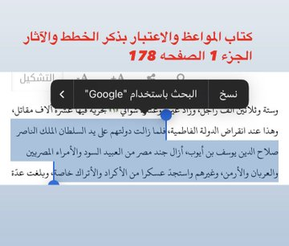
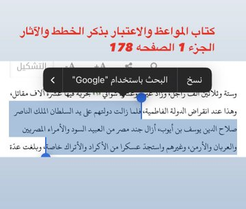

إثبات النسب الكوردي للأيوبيين
نقل على لسان المؤرخ المصري المعاصر للدولة الأيوبية، وهو يسأل مباشرة الملك الكامل ابن أخ صلاح الدين عن نسبه، فأجابه بكل وضوح أنهم #أكراد.
دور نسب صلاح الدين الكوردي في تولي الحكم
القصة الشهيرة: بعد موت عم صلاح الدين "شيركو"، وزير الدولة الفاطمية (العاضد آنذاك)، كان يوجد أربعة أمراء زنكيين لتولي المنصب، ثلاثة منهم من #الكورد:
- علي المشطوب الهكاري
- شهاب الدين الحارمي (خال صلاح الدين)
- قطب الدين خسرو الهذباني
- الياروقي (تركي)
لم يقف مع صلاح الدين أحد، ولا سيما أنه كان أصغرهم سنًا وأقلَّهم قوةً وجيشًا. لكن بذكاء الفقيه عيسى الهكاري استطاع استغلال نسب صلاح الدين #الكوردي ليلتف إليه الأمراء حتى كَبُر شأنه وأصبح ملكًا.
لهذا يتبين لنا أنه لولا كُرديته لما استطاع صلاح الدين البقاء في الحكم بوجود الوزراء الأربعة.
دور الكورد في دولة صلاح الدين
جيش صلاح الدين وأمراؤه كانوا #الأغلبية الساحقة من الكورد والأتراك (المماليك).
بعد تولي صلاح الدين الحكم والقضاء على الدولة الفاطمية، بدَّل الأمراء #بالكورد، وبدّل الجنود العربان والعبيد المصريين بالعساكر الكوردية والتركية (المماليك).
 

حتى أثناء حروبه، لم يُذكر العرب؛ فقد كان ميمنته من المماليك (أتراك)، والميسرة والقلب من #أكراد.
في معركة فتح عكا مثلاً، كما يذكر وزيره ابن شداد، كانت الميسرة والقلب من #الكورد.
وفي معركة حطين، يُذكر قدوم الكورد من آمد وأربيل والموصل واجتماع قادة الكورد كالمشطوب والسمين مع صلاح الدين لحصار القدس، وكذلك غضب الأتراك من خطته بعد موافقة الكورد عليها.
ومن أهم ما يُذكر: أسر الملك الصليبي على يد #الكوردي درباس.
دور الكورد يطول شرحه، لكن يكفي ما سبق؛ فأين كان دور أعمام صلاح الدين العرب من كل هذا؟
سبب ادعاء بعض الأيوبيين النسب العربي
أولاً: الانتساب للعرب ظهر من الجيل الثالث من الأيوبيين، عندما فقدت الدولة الأيوبية قوتها ونشأت حروب أهلية بين بني أيوب.
النسب العربي في الإسلام أفضل من غيره، وبالأخص نسب #النبي. وحتى عندنا، توجد عائلات من الكورد يقولون: نحن من نسل النبي (سيد) ولنا "أوجاغ" (كرامات) لرفع مكانتهم.
النسب العربي، وبالأخص القرشي، مهم جدًا سياسيًا بحديث النبي: «الناس تبع لقريش».
لذلك نرى – حتى الآن – بعض القادة كـالخميني ومقتدى ونصر الله وغيرهم ينسبون أنفسهم كذبًا للنبي ليلتف إليهم الناس.
وهذا ما أكده لنا تقي الدين بقوله: إن عمي #صلاح الدين اجتمع فيه شروط الخلافة عدا النسب #القرشي.
هذا يعني أن صلاح الدين لم يكن #قرشيًا، أي لم يكن هاشميًا ولا أمويًا.
وقد ادعى إسماعيل النسب الأموي ونصَّب نفسه خليفة، لكن الملك صلاح الدين وأخاه العادل #أنكروا عليه ذلك.
أما القول بأنهم من غطفان كما رجّحه الحسن بن غريب الحرشي، فهو راوٍ #مجهول ولا توجد له ترجمة كما ذكر ابن خَلِّكان.
رواية ابن شداد واعتماده على النسب الكوردي
الجدير بالذكر أن وزير صلاح الدين بهاء الدين ابن شداد الذي نقل نسبه الأموي (والذي قوبل بالإنكار من قبل صلاح الدين)، هو بنفسه اعتمد على رواية #كورديّة لبني أيوب.
فلماذا لم يعترض عليه صلاح الدين كما اعترض على النسب الأموي، مع أن رواية كُرديتهم كانت أشهر، ولا بد من سماع صلاح الدين بهذا النسب؟
ملاحظات حول تدوين النسب عند الأيوبيين
آل أيوب لا يعرفون جدًّا فوق شاذي، وكما هو متعارف، فإن العرب الأقحاح يكتبون أنسابهم جدًّا فوق جدّ.
على العكس من الكورد؛ يأخذون – على الأكثر – أربعة أو خمسة أجداد، ثم ينسبون القبيلة لمنطقة معيّنة. وهذا يُحتمل أن يكون أيضًا دليلًا على عدم عروبتهم.
كان اسم صلاح الدين: "التكريتي" (نسبةً إلى مكان ولادته).
الرد على شبهة عدم تحدثه بالكوردية وعدم الاحتفال بنوروز
أما كلامهم: لماذا لم يتكلم صلاح الدين #الكوردية ولم يحتفل بعيد نوروز ولم يقل #هربجي؟
فالأمر بديهي جدًا؛ صلاح الدين ترعرع في الشام وحلب بين العرب، وعدا ذلك، فقد كان من بيئة مسلمة محافظة، وأكيد أن التكلم مع جنوده بلغة القرآن أفضل، مثله مثل باقي القادة الكورد، أي أنه كان "نصف مستعرب".
فنسب الأيوبيين العربي كان لمصالح سياسية كما وُضح؛ والأصح أنه كوردي، والله أعلم.